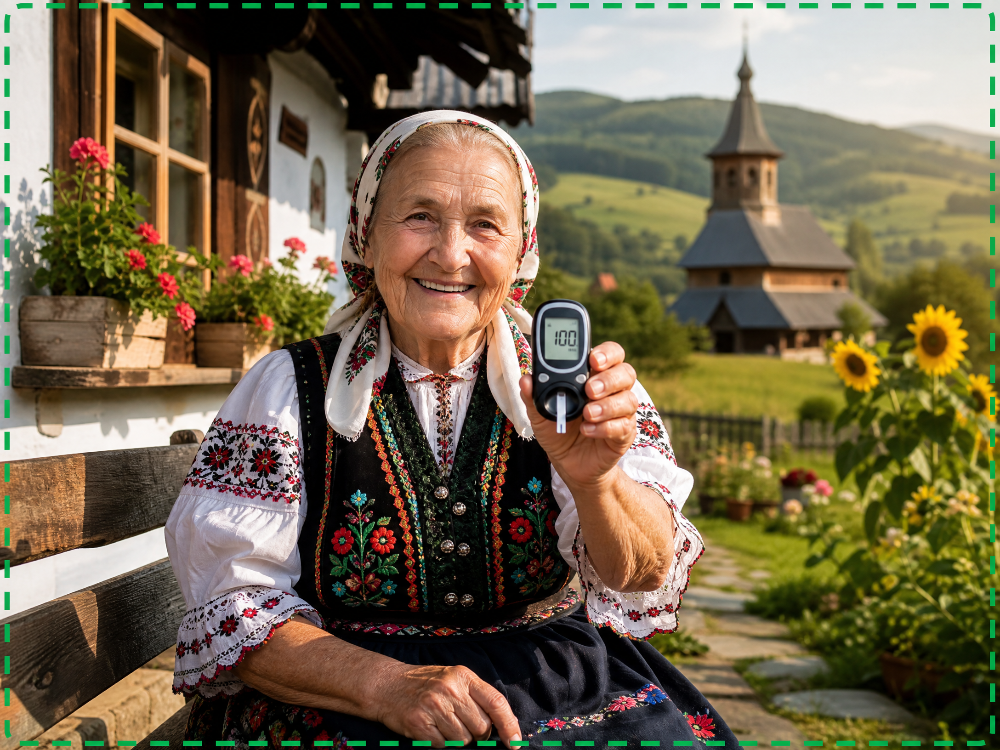
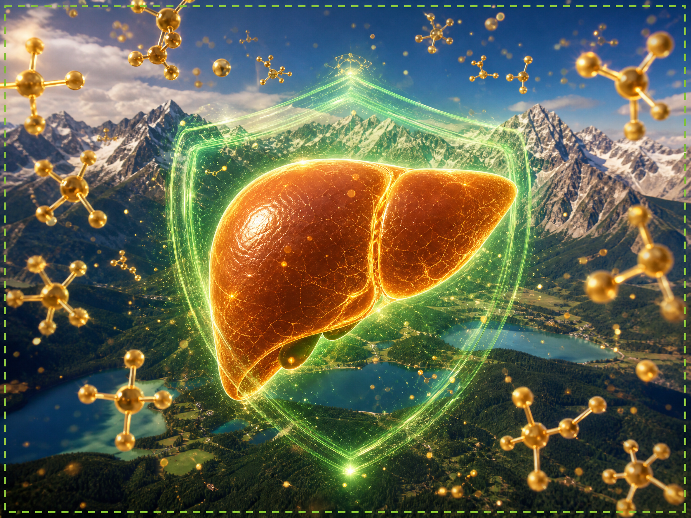

Cukrovka a vysoká hladina cukru v krvi sťažujú život miliónom ľudí, najmä v staršom veku. Nový objav založený na európskom výskume však prináša nádej tým, ktorí bojujú s udržaním hladiny glukózy pod kontrolou. Tento nový prístup nielenže lieči príznaky, ale zameriava sa na samotný koreň problému.
KLIKNITE SEM A DOZVIETE SA VIAC Z VIDEA
Predstavte si, že si opäť môžete vychutnávať svoje obľúbené jedlá bez neustálych obáv z výkyvov hladiny cukru v krvi. Táto nová metóda, vyvinutá špeciálne pre potreby staršieho organizmu, pomáha optimalizovať metabolizmus a podporuje zdravé fungovanie pečene a pankreasu.
Naša redakcia preskúmala toto inovatívne riešenie, ktoré už pomohlo mnohým ľuďom získať späť kontrolu nad svojím zdravím. Už sa nemusíte vzdávať malých radostí života; so správnou podporou je stabilná hladina cukru v krvi dosiahnuteľným cieľom.
POZRITE SI EXKLUZÍVNU PREZENTÁCIU TERAZTajomstvo spočíva v zlepšení citlivosti buniek na inzulín a podpore prirodzených detoxikačných procesov. S pribúdajúcim vekom sa naše bunky často stávajú odolnými voči inzulínu, čo bráni správnemu vstrebávaniu cukru. Tento nový vzorec funguje ako "ochranný štít", ktorý obnovuje rovnováhu a umožňuje efektívne využitie glukózy ako energie.

Nedovoľte, aby cukrovka ovládala váš život. Pripravili sme podrobné video, ktoré ukazuje, ako táto metóda funguje a ako vám môže pomôcť viesť zdravší a vyváženejší život. Urobte prvý krok k lepšiemu zdraviu už dnes!
KLIKNITE SEM PRE ZOBRAZENIE CELÉHO VIDEA